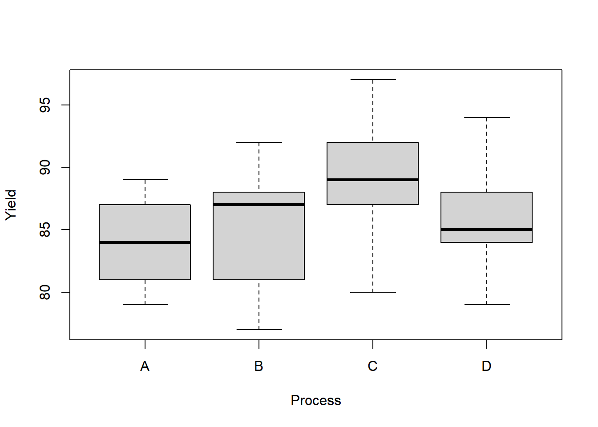

Chapter 7 Randomized Complete Block Design
In this chapter we discuss the technique of blocking which means to sample individuals from groups that are known (or strongly suspected) to have different average responses. Blocking is a type of explicit control—we account for the known effect of the blocks on the response through our sampling/experimental design. The effect of including blocks is (usually) to reduce the remaining variability in the response, thereby making it easier to detect treatment effects. One way to visualize this blocking effect is to recall the sum of squares decomposition SST = SSE + SSTr. When blocks are utilized, the decomposition becomes SST = SSE + SSBl + SSTr. The block sum of squares tends to absorb mostly the SSE term, thereby reducing the SSE and making the F ratio for treatments larger. However, some of the information of the data is “used up” estimating the block effects, and this reduces the degrees of freedom associated with MSE. Therefore, if “useless” blocks are used, we will tend to lose efficiency/power in detecting treatment effects.
7.1 Paired experiments as blocking
We are already familiar with blocking in a special type of two-sample experiment—paired data. For example, consider a paired design where responses on \(n\) individuals are measured as \(X_i\) “before” and \(Y_i\) “after” a treatment. The individuals constitute \(n\) blocks, with one sample, the difference \(D_i = Y_i - X_i\), for each block. The variance of \(D_i\) is \(V(D_i) = V(X_i) + V(Y_i) - 2Cov(X_i, Y_i)\). In a two-sample experiment where two different groups of individuals are treated, the covariance of responses between groups is zero. However, if multiple measurements are taken on the same individual, we generally expect the covariance of those measurements to be positive. Therefore, intuitively, we would expect the variance of differences of observations on the same individual to be lower than the variance of the difference of responses on two different individuals.
7.2 Randomized Complete Block Designs
7.2.1 Notation
We will use the following notation:
- \(n\) is the number of blocks
- \(J\) is the number of treatments
- \(r\) is the number of replications of each treatment in a block. So, each block has \(rJ\) responses.
- Y_{ijk} is the response for the \(i^{th}\) block for treatment \(j\) at the \(k^{th}\) replicate.
- \(\overline Y_{i\cdot\cdot} = (rJ)^{-1}\sum_{j=1}^J\sum_{k=1}^r Y_{ijk}\) is the sample mean response of \(i^{th}\) block
- \(\overline Y_{\cdot j \cdot} = (rn)^{-1}\sum_{i=1}^n\sum_{k=1}^r Y_{ijk}\) is the sample mean response of \(j^{th}\) treatment
- \(\overline Y_{\cdot\cdot\cdot} = (rJn)^{-1}\sum_{i=1}^n\sum_{j=1}^J\sum_{k=1}^r Y_{ijk}\) is the sample mean response of all the responses, the grand sample mean.
In single replication studies, \(r=1\) and the third subscript is dropped from the notation.
The model may be written in the following effects-style notation:
\[Y_{ijk} = \mu + \beta_i + \tau_j + \epsilon_{ijk}\]
where \(\mu\) is an “intercept” term equal to \(E(Y_{ijk})\) if the other effects are actually zero; \(\beta_i\) for \(i=1, \ldots, n\) are the block effects, \(\tau_j\) for \(j = 1, \ldots, J\) are the treatment effects, and \(\epsilon_{ijk}\) is the effect of random sampling variability where \(\epsilon_{ijk}\stackrel{iid}{\sim}N(0,\sigma^2)\).
The above model requires two constraints in order to estimate the parameters \((\mu, \beta_i, \tau_j)\) for all \(i\) and \(j\). Here is the problem: the estimates of these parameters will be functions of the \(1 + n + J\) sample means above (the grand sample mean, block and treatment sample means). But, these are not all freely varying. For instance, since \(\overline Y_{\cdot\cdot\cdot} = (J)^{-1}\sum_{j=1}^J \overline Y_{\cdot j \cdot}\), it follows that we only need to know \(J-1\) of the \(J\) treatment sample means \(\overline Y_{\cdot j \cdot}\) and \(\overline Y_{\cdot\cdot\cdot}\) in order to determine the last one. The same is true of the block sample means. This means we must introduce two constraints on the parameters \((\mu, \beta_i, \tau_j)\) for all \(i\) and \(j\) to avoid defining parameters that are simply linear combinations of other parameters.
There are two common choices, the baseline constraints and the sum-to-zero constraints. Under the baseline constraints we set one of the treatment effects and one of the block effects to zero. Often, we would set \(\beta_n = 0\) and \(\tau_J = 0\), but sometimes (in some software) the first rather than last effects are set to zero. Whichever are set to zero are absorbed by \(\mu\) and \(\mu\) becomes the “baseline” effect. The remaining non-zero effects represent departures from the baseline. The second common constraint is the sum-to-zero constraint, which forces \(\sum \beta_i = \sum \tau_j = 0\). This constraint causes \(\mu\) to become the overall average response, and the effects to represent departures from the average.
7.2.2 Example: Penicillin Manufacturing
In this example 5 batches of raw organic material are used to make the antibiotic penicillin. We are interested in the yield of penicillin using 4 different industrial processes. Each process is used once per batch.
Download penicillin.csvpenicillin <- read.csv('penicillin.csv')
head(penicillin)## Batch Process Yield
## 1 1 A 89
## 2 1 B 88
## 3 1 C 97
## 4 1 D 94
## 5 2 A 84
## 6 2 B 77penicillin$Batch <- factor(penicillin$Batch, levels = unique(penicillin$Batch))
penicillin$Process <- factor(penicillin$Process, levels = unique(penicillin$Process))boxplot(Yield ~ Process,
data = penicillin)
Let’s see what parameter estimates R produces for the penicillin data. From the output of the lm function we see that treatment A and Batch 1 are missing—these are the baseline and are reflected in the intercept estimate, which is 90. How did R get 90? Well, the overall sample mean is 86; the process A mean yield is 84, and the batch 1 mean yield is 92. So, the effect of process A compared to the overall average is -2 and the effect of batch 1 compared to the overall average is +8. This combines for +6, so we end up with a batch1+processA baseline effect of 90 = 84+6. The rest of the effect estimates are easy to obtain as differences from this baseline. For example, since process B has a sample mean 1 larger than A, the process B effect is 1. And, since batch 3 has a sample mean effect 7 less than batch 1 the batch 3 effect is -7, and so on.
library(tidyverse)## ── Attaching packages ─────────────────────────────────────── tidyverse 1.3.2 ──
## ✔ ggplot2 3.3.6 ✔ purrr 0.3.4
## ✔ tibble 3.1.8 ✔ dplyr 1.0.10
## ✔ tidyr 1.2.1 ✔ stringr 1.4.1
## ✔ readr 2.1.2 ✔ forcats 0.5.2
## ── Conflicts ────────────────────────────────────────── tidyverse_conflicts() ──
## ✖ dplyr::filter() masks stats::filter()
## ✖ dplyr::lag() masks stats::lag()by_batch <- group_by(penicillin, Batch)
by_batch <- summarise(by_batch, batch_mean = mean(Yield))
by_batch## # A tibble: 5 × 2
## Batch batch_mean
## <fct> <dbl>
## 1 1 92
## 2 2 83
## 3 3 85
## 4 4 88
## 5 5 82by_trt <- group_by(penicillin, Process)
by_trt <- summarise(by_trt, trt_mean = mean(Yield))
by_trt## # A tibble: 4 × 2
## Process trt_mean
## <fct> <dbl>
## 1 A 84
## 2 B 85
## 3 C 89
## 4 D 86mean(penicillin$Yield)## [1] 86my.lm <- lm(Yield~Process+Batch, data = penicillin)
summary(my.lm)##
## Call:
## lm(formula = Yield ~ Process + Batch, data = penicillin)
##
## Residuals:
## Min 1Q Median 3Q Max
## -5.00 -2.25 -0.50 2.25 6.00
##
## Coefficients:
## Estimate Std. Error t value Pr(>|t|)
## (Intercept) 90.000 2.745 32.791 4.1e-13 ***
## ProcessB 1.000 2.745 0.364 0.72194
## ProcessC 5.000 2.745 1.822 0.09351 .
## ProcessD 2.000 2.745 0.729 0.48018
## Batch2 -9.000 3.069 -2.933 0.01254 *
## Batch3 -7.000 3.069 -2.281 0.04159 *
## Batch4 -4.000 3.069 -1.304 0.21686
## Batch5 -10.000 3.069 -3.259 0.00684 **
## ---
## Signif. codes: 0 '***' 0.001 '**' 0.01 '*' 0.05 '.' 0.1 ' ' 1
##
## Residual standard error: 4.34 on 12 degrees of freedom
## Multiple R-squared: 0.5964, Adjusted R-squared: 0.361
## F-statistic: 2.534 on 7 and 12 DF, p-value: 0.07535The options statement below causes R to use the sum-to-zero constraints. We can see the resulting parameter estimates are now in terms of differences from the overall sample mean yield.
options(contrasts=c('contr.sum', 'contr.sum'))
my.lm.sum <- lm(Yield~Process+Batch, data = penicillin)
summary(my.lm.sum)##
## Call:
## lm(formula = Yield ~ Process + Batch, data = penicillin)
##
## Residuals:
## Min 1Q Median 3Q Max
## -5.00 -2.25 -0.50 2.25 6.00
##
## Coefficients:
## Estimate Std. Error t value Pr(>|t|)
## (Intercept) 86.0000 0.9704 88.624 < 2e-16 ***
## Process1 -2.0000 1.6808 -1.190 0.25708
## Process2 -1.0000 1.6808 -0.595 0.56292
## Process3 3.0000 1.6808 1.785 0.09956 .
## Batch1 6.0000 1.9408 3.092 0.00934 **
## Batch2 -3.0000 1.9408 -1.546 0.14812
## Batch3 -1.0000 1.9408 -0.515 0.61573
## Batch4 2.0000 1.9408 1.031 0.32310
## ---
## Signif. codes: 0 '***' 0.001 '**' 0.01 '*' 0.05 '.' 0.1 ' ' 1
##
## Residual standard error: 4.34 on 12 degrees of freedom
## Multiple R-squared: 0.5964, Adjusted R-squared: 0.361
## F-statistic: 2.534 on 7 and 12 DF, p-value: 0.07535We can obtain design matrices under both sets of constraints using the model.matrix function. Note that the sum-to-zero design matrix literally has columns summing to zero!
X <- model.matrix(my.lm)
X## (Intercept) ProcessB ProcessC ProcessD Batch2 Batch3 Batch4 Batch5
## 1 1 0 0 0 0 0 0 0
## 2 1 1 0 0 0 0 0 0
## 3 1 0 1 0 0 0 0 0
## 4 1 0 0 1 0 0 0 0
## 5 1 0 0 0 1 0 0 0
## 6 1 1 0 0 1 0 0 0
## 7 1 0 1 0 1 0 0 0
## 8 1 0 0 1 1 0 0 0
## 9 1 0 0 0 0 1 0 0
## 10 1 1 0 0 0 1 0 0
## 11 1 0 1 0 0 1 0 0
## 12 1 0 0 1 0 1 0 0
## 13 1 0 0 0 0 0 1 0
## 14 1 1 0 0 0 0 1 0
## 15 1 0 1 0 0 0 1 0
## 16 1 0 0 1 0 0 1 0
## 17 1 0 0 0 0 0 0 1
## 18 1 1 0 0 0 0 0 1
## 19 1 0 1 0 0 0 0 1
## 20 1 0 0 1 0 0 0 1
## attr(,"assign")
## [1] 0 1 1 1 2 2 2 2
## attr(,"contrasts")
## attr(,"contrasts")$Process
## [1] "contr.treatment"
##
## attr(,"contrasts")$Batch
## [1] "contr.treatment"X <- model.matrix(my.lm.sum)
X## (Intercept) Process1 Process2 Process3 Batch1 Batch2 Batch3 Batch4
## 1 1 1 0 0 1 0 0 0
## 2 1 0 1 0 1 0 0 0
## 3 1 0 0 1 1 0 0 0
## 4 1 -1 -1 -1 1 0 0 0
## 5 1 1 0 0 0 1 0 0
## 6 1 0 1 0 0 1 0 0
## 7 1 0 0 1 0 1 0 0
## 8 1 -1 -1 -1 0 1 0 0
## 9 1 1 0 0 0 0 1 0
## 10 1 0 1 0 0 0 1 0
## 11 1 0 0 1 0 0 1 0
## 12 1 -1 -1 -1 0 0 1 0
## 13 1 1 0 0 0 0 0 1
## 14 1 0 1 0 0 0 0 1
## 15 1 0 0 1 0 0 0 1
## 16 1 -1 -1 -1 0 0 0 1
## 17 1 1 0 0 -1 -1 -1 -1
## 18 1 0 1 0 -1 -1 -1 -1
## 19 1 0 0 1 -1 -1 -1 -1
## 20 1 -1 -1 -1 -1 -1 -1 -1
## attr(,"assign")
## [1] 0 1 1 1 2 2 2 2
## attr(,"contrasts")
## attr(,"contrasts")$Process
## [1] "contr.sum"
##
## attr(,"contrasts")$Batch
## [1] "contr.sum"7.2.3 Sums of squares and F tests in RCBD
The primary goal of RCBD experiments is usually to evaluate whether all the treatment mean responses are equal, just as in one-way ANOVA. And, as in completely randomized experiments — experiments in which a random sample of experimental units are randomly assigned treatments — an F test based on the ratio of two variance estimators is useful for testing this hypothesis. Keep in mind that we are not interested in testing whether the block mean responses are all equal, although we will consider a measure of the usefulness of blocking later on.
Just as in the completely randomized design, for RCBD experiments we can decompose the total sum of squares into components for blocks, treatments, and the “errors”:
\[\begin{align*} SST & = SSE + SSBl + SSTr\\ SST & = \sum_{i=1}^n\sum_{j=1}^J\sum_{k=1}^r (y_{ijk} - \overline y_{\cdot\cdot\cdot})^2\\ SSBl & = (rJ)\sum_{i=1}^n (\overline y_{i\cdot\cdot} - \overline y_{\cdot\cdot\cdot})^2\\ SSTr & = (rn)\sum_{j=1}^J (\overline y_{\cdot j\cdot} - \overline y_{\cdot\cdot\cdot})^2\\ SSE & = \sum_{i=1}^n\sum_{j=1}^J\sum_{k=1}^r (y_{ijk} -\overline y_{i\cdot\cdot}-\overline y_{\cdot j\cdot} + \overline y_{\cdot\cdot\cdot})^2 \end{align*}\]
To test the hypothesis \(H_0:\tau_j = 0, \,j=1, \ldots, J\), or equivalently, that the treatments have no effect (the mean response is constant over treatments) versus \(H_a:\text{ not all treatment effects are 0 }\), i.e., \(H_a: \tau_j\ne 0, \text{ for some }j\in \{1, \ldots, J\}\), we use the following F statistic: \[F = \frac{SSTr/(J-1)}{SSE/(nJr - n - J +1)}\stackrel{H_0}{\sim} F_{J-1, nJr - n - J +1}.\] To compute degrees of freedom of a sum of squares, the general rule is to subtract from the total number of summands the number of estimated parameters. For example, in SSTr there are J summands and 1 “estimated parameter”, which is the parameter estimated by \(\overline y_{\cdot\cdot\cdot}\). And, in SSE there are \(nJr\) summands, and there are \(n+J+1-2\) uniquely determined sample means in the set \(\{\overline y_{1\cdot\cdot},\ldots, \overline y_{n\cdot\cdot}, \overline y_{\cdot 1\cdot}, \ldots, \overline y_{\cdot J\cdot},\overline y_{\cdot\cdot\cdot}\}\) as discussed above.
7.2.4 Example: Significance of Process in Penicillin experiment
The F test does not suggest mean yield varies over the four penicillin manufacturing processes.
SST <- sum((penicillin$Yield - mean(penicillin$Yield))^2)
SSTr <- 5*sum((by_trt$trt_mean - mean(penicillin$Yield))^2)
SSBl <- 4*sum((by_batch$batch_mean - mean(penicillin$Yield))^2)
SSE <- SST - SSTr - SSBl
SSTr## [1] 70SSBl## [1] 264SSE## [1] 226F <- (SSTr/(4-1))/(SSE / (5*4-4-5+1))
F## [1] 1.2389381-pf(F,4-1,5*4-4-5+1)## [1] 0.3386581my.aov <- aov(Yield~Batch+Process, penicillin)
my.aov## Call:
## aov(formula = Yield ~ Batch + Process, data = penicillin)
##
## Terms:
## Batch Process Residuals
## Sum of Squares 264 70 226
## Deg. of Freedom 4 3 12
##
## Residual standard error: 4.339739
## Estimated effects may be unbalancedsummary(my.aov)## Df Sum Sq Mean Sq F value Pr(>F)
## Batch 4 264 66.00 3.504 0.0407 *
## Process 3 70 23.33 1.239 0.3387
## Residuals 12 226 18.83
## ---
## Signif. codes: 0 '***' 0.001 '**' 0.01 '*' 0.05 '.' 0.1 ' ' 17.2.5 Follow-up comparisons and contrasts
Just as in one-way ANOVA for a completely randomized design (CRD) we may analyze pairwise comparisons of treatment mean responses when the F test rejects the hypothesis that all treatment means are the same. Or, we could estimate and test planned contrasts. And, there is essentially no differnce in how we apply these estimates and tests compared with CRD.
To compute Tukey HSD confidence intervals we use essentially the same formula:
\[\left(\overline Y_{i\cdot \cdot} - \overline Y_{\ell \cdot \cdot} \pm 2^{-1/2}q_{1-\alpha, \,J, \,nJr - n- J +1}\sqrt{MSE\left(\frac{1}{rn} + \frac{1}{rn}\right)}\right)\]
to define a set of simultaneous \(100(1-\alpha)\%\) CIs for the pairwise differences of treatment mean responses. (Recall \(q_{\alpha, \,u, \,v}\) is the \(\alpha\) quantile of Tukey’s Studentized range distribution for \(u\) means and with \(v\) df.)
Let \(\gamma = c^\top \mu = \sum_{i=1}^J c_i \mu_i\) denote a linear combination of treatment mean responses where \(\sum_{i=1}^J c_i = 0\). Then, \(\gamma\) is a contrast, and
\[t = \frac{\hat\gamma - \gamma}{\sqrt{MSE\sum_{i=1}^J \left(\frac{c_i^2}{nr}\right)}}\sim t_{nrJ - n-J+1},\]
where \(\hat\gamma = \sum_{i=1}^J c_i \overline Y_{i\cdot\cdot}\). This \(t\) random variable may be used to derive point null hypothesis tests and CIs for \(\gamma\).
For simultaneous tests or CIs for a set of contrasts, we may use Scheff'e’s method. The Scheff'e simultaneous \(100(1-\alpha)\%\) CIs for all linear contrasts are given by: \[\left(\hat\gamma \pm \sqrt{(J-1)F_{1-\alpha, J-1, nJr-n-J+1}}\sqrt{MSE\sum_{i=1}^J \left(\frac{c_i^2}{nr}\right)}\right).\]
7.2.6 Example: Tukey, contrasts, and Scheffe for penicillin experiment
There is no reason to use Tukey’s method with the penicillin experiment given the F test supports the null hypothesis. But, just for practice we can compute the Process B - Process A CI and compare with the built-in TukeyHSD function.
c(by_trt$trt_mean[2] - by_trt$trt_mean[1] - sqrt(.5)*qtukey(0.95, 4, 4*5-4-5+1)*sqrt((SSE / (5*4-4-5+1))*(2/5)),
by_trt$trt_mean[2] - by_trt$trt_mean[1] + sqrt(.5)*qtukey(0.95, 4, 4*5-4-5+1)*sqrt((SSE / (5*4-4-5+1))*(2/5)))## [1] -7.148719 9.148719TukeyHSD(my.aov, which = 'Process')## Tukey multiple comparisons of means
## 95% family-wise confidence level
##
## Fit: aov(formula = Yield ~ Batch + Process, data = penicillin)
##
## $Process
## diff lwr upr p adj
## B-A 1 -7.148719 9.148719 0.9826684
## C-A 5 -3.148719 13.148719 0.3105094
## D-A 2 -6.148719 10.148719 0.8837551
## C-B 4 -4.148719 12.148719 0.4905194
## D-B 1 -7.148719 9.148719 0.9826684
## D-C -3 -11.148719 5.148719 0.7002271Next, let’s test is the Process C mean yield is different than the average of the other processes. This is a contrast with \(c = (-1/3,-1/3,1,-1/3)\). We might be tempted to test this particular contrast after peeking at the boxplot above. That’s not a good idea! Using the data to suggest tests to perform leads to inflated Type 1 errors. However, if we apply Scheff'e’s correction, then we control the Type 1 error rate for all linear contrasts, which includes comparisons that are inspired by the data.
At \(\alpha = .10\) we would actually reject the null hypothesis that the Process C mean is equal to the average of the A, B, and D means if we performed the uncorrected test (which we should not because we chose to based on the boxplot). But, the Scheff'e correction saves us from our shameful p-value snooping!
hat.gamma <- by_trt$trt_mean[3] - mean(c(by_trt$trt_mean[c(1,2,4)]))
t <- hat.gamma / sqrt((SSE / (5*4-4-5+1)) * (1/5 + 3*(1/(5*9))))
2*(1-pt(abs(t), 5*4-4-5+1)) # uncorrected p-value## [1] 0.09955857F <- (t/sqrt(4-1))^2
1-pf(F, 4-1, 5*4-4-5+1) # Scheffe corrected p-value## [1] 0.4014427library(emmeans)
fit.emm <- emmeans(my.aov, "Process")
# unadjusted, just testing one contrast
summary(contrast(fit.emm, method = list(c(-1/3, -1/3, 1,-1/3))))## contrast estimate SE
## c(-0.333333333333333, -0.333333333333333, 1, -0.333333333333333 4 2.24
## df t.ratio p.value
## 12 1.785 0.0996
##
## Results are averaged over the levels of: Batch# Scheffe adjustment so that we could test all linear contrasts
summary(contrast(fit.emm, method = list(c(-1/3, -1/3, 1,-1/3)),
adjust = "scheffe"), scheffe.rank = 3)## contrast estimate SE
## c(-0.333333333333333, -0.333333333333333, 1, -0.333333333333333 4 2.24
## df t.ratio p.value
## 12 1.785 0.4014
##
## Results are averaged over the levels of: Batch
## P value adjustment: scheffe method with rank 37.2.7 Relative efficiency of Blocking (vs. CRD)
After an RCBD experiment is performed it is sometimes helpful for researchers to understand whether blocking was a helpful part of the experimental design. Blocking variables are selected by the researchers with the belief their levels are associated with different average responses. The idea is that if we take into account the variability in response due to block variable levels, we will reduce the unexplained variability. This manifests in the decomposition
\[SST = SSE + SSBl + SSTr\]
where we expect the block sum of squares to “absorb” part of the SSE that would have been present in a CRD. Smaller SSE in turn increases the F statistic \(F = MSTr/MSE\) for testing significance of the treatments by lowering the denominator in the ratio. On the other hand, blocking creates an opposite effect that decreases this F statistic as well. Just like the total sum of squares decomposes, so do the degrees of freedom:
\[nJr - 1 = (nJr - n - J + 1) + (n-1) + (J-1).\]
The upshot is that the number of degrees of freedom “used” in estimating SSE is smaller if blocks are included compared to a CRD with no blocks and equal total sample size. This reduces the denominator of MSE, which increases MSE relative to CRD and thus decreases the F ratio for testing for significant treatment effects. Usually, if experimenters choose a small number of intuitively useful blocks, RCBD is “more efficient” than CRD in the sense that its F test has increased power to detect treatment effects.
We can attempt to quantify the effect of blocking compared to CRD using a post-experiment measure called the relative efficiency (RE) of blocking (relative, that is, to CRD). The formula, given below, accounts for both the decrease in degrees of freedom and the approximate decrease in \(\hat\sigma^2\) when blocking (RCBD) versus not blocking (CRD): \[RE = \frac{df_{MSE,RCBD} + 1}{df_{MSE,CRD} + 1}\frac{df_{MSE,CRD} + 3}{df_{MSE,RCBD} + 3}\frac{\hat\sigma^2_{CRD}}{\hat\sigma^2_{RCBD}},\] where \[\hat\sigma^2_{CRD} = MSE_{CRD},\] \[MSE_{CRD} = \frac{df_{Bl}MSBl_{RCBD} + (df_{Tr}+df_{E})MSE_{RCBD}}{df_{Bl} + df_{Tr} + df_E}.\] And, from above, we have \[df_{Tr} = J-1, \quad df_{Bl} = n-1, \quad df_{E} = df_{MSE,RCBD} = nJr - n - J +1, \quad \text{and }\, df_{MSE,CRD} = nJr - J.\]
7.2.8 Example: RE of blocking in penicillin experiment
The relative efficiency of blocking is about 1.48, which can be interpreted as saying each replicated response in the RCBD experiment provides approximately 1.48 times at much (\(48\%\) more) information compared to a replicate in a CRD design. In other words, it would take \(48\%\) more samples in a CRD to get the same amount of information as in a RCBD. As long as RE is above 1, the RCBD design provides an advantage over CRD. Since it may be substantially more work to implement a RCBD than a CRD, experimenters would like to see a substantial advantage in RE for RCBD relative to CRD.
MSE_RCBD <- SSE / (4*5-4-5+1)
MSBl <- SSBl / (5-1)
MSE_CRD <- ((5-1)*MSBl + (5*4-5-4+1 + 4-1)*MSE_RCBD)/(5*4-5-4+1+4-1+5-1)
df_MSE_CRD <- 5*4-4
df_MSE_RCBD <- 5*4-4-5+1
RE <- (MSE_CRD/MSE_RCBD) * ((df_MSE_CRD+3)/(df_MSE_RCBD +3)) * ((df_MSE_RCBD+1)/(df_MSE_CRD +1))
RE## [1] 1.479334